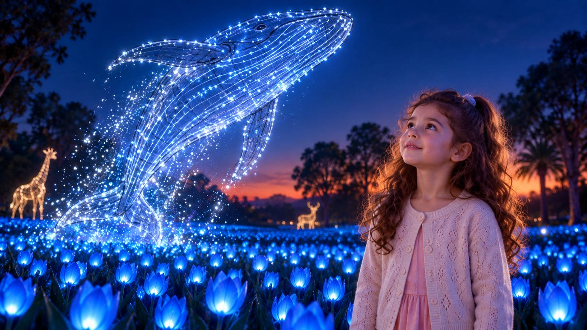
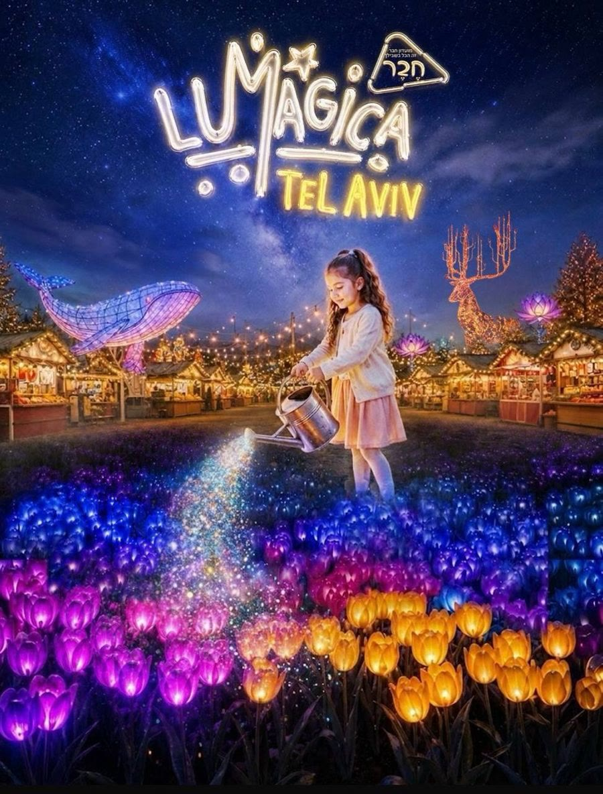
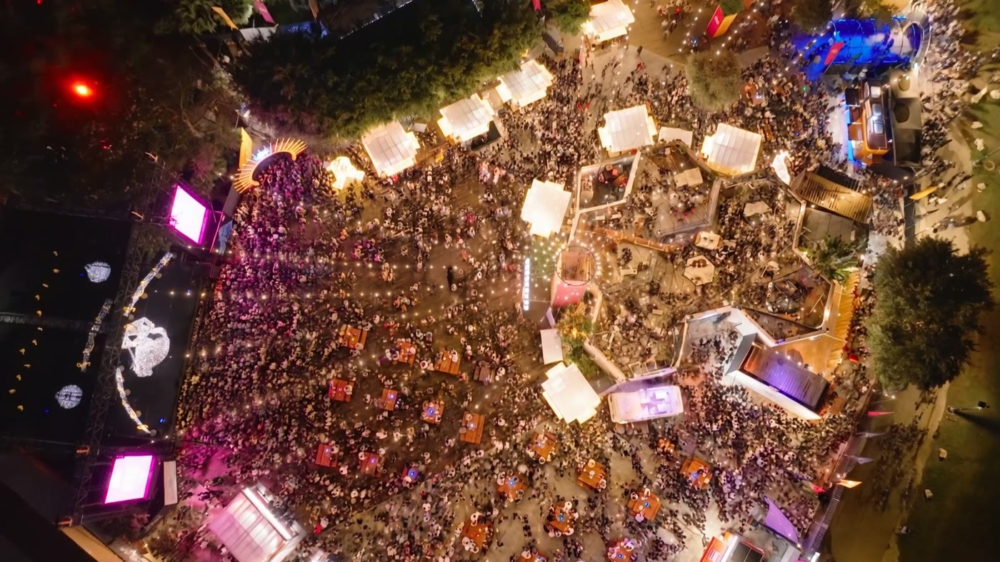

Lumagica תל אביב
מאחורי האור.
פרסומת ליריד החורף בפארק הירקון: ילדה, משפך, ושדה טוליפים שנדלק בכחול. נבנתה ב־20 ימים, עם במאית אחת וצוות של מודלים.


סרט שנוצר עם AI עובר את אותם שלבים כמו סרט מצולם. יש תסריט, ליהוק, ימי צילום וחדר עריכה. רק שהמצלמה היא מודל, וכל שוט מצולם עשרות פעמים עד שהוא נכון.
שמונה תחנות, מרעיון ועד מאסטר.
הרובוטים מתחת לתמונה הם הצוות. גללו, והם הולכים איתכם מתחנה לתחנה. מי שעובד בתחנה נדלק ועומד מלפנים.
-
1
רעיון ותסריט
הכול התחיל בשיחת טלפון: ״צריך פרסומת לפסטיבל האור.״ נכתבו שני תסריטים. הראשון נבנה סביב טיפת אור, ונגנז. השני, עם הילדה והמשפך, הפך לסרט.
שורה אחת מהתסריט שנגנז, ״גבעה מלאה באלפי פרחים מוארים״, עברה לשני והפכה לסרט כולו.
-
2
אנימטיק
סרטון מאויר וגס שקובע כמה זמן מחזיק כל רגע, עוד לפני שיש תמונה אחת. 11 גרסאות בתשעה ימים. Codex חילץ ממנו פריימים והפך אותם לצילומים.
כך מגלים ששוט ארוך מדי לפני שמשלמים עליו בעשרות טייקים.
-
3
מקור אמת
פריים אחד שקובע צבע, אור וחשיפה. כל תמונה שנוצרה אחריו נמדדה מולו, כדי ששוטים שונים ייראו כאילו צולמו באותו לילה. Claude דגם ממנו פלטה של שישה צבעים בעזרת Python.
כשהמספרים נכונים והתמונה עדיין לא, מתארים למודל את ההרגשה.
-
4
ליהוק
לומה, המשפך, הצבי, הלוויתן והשדה נבנו בגרידים ממוספרים. 1,072 תמונות ב־Google Flow, עד שכל דמות ננעלה בגיליון שמראה אותה מכל הזוויות.
הצורה של הכובע והשמלה ננעלה. רק הצבע והחומר המשיכו להשתנות.
-
5
פריימי פתיחה וסיום
לכל שוט שתי תמונות: איך הוא מתחיל ואיך הוא נגמר. הן מאושרות לפני שמייצרים וידאו, ואז המודל רק צריך למלא את התנועה ביניהן.
רוב התיקונים זולים יותר בשלב הסטילס.
-
6
טייקים
מהפריימים נוצר וידאו: 236 סרטונים ב־Flow ועוד 20 ב־Magnific. מכל שוט נבחר טייק אחד, מסומן בלב. לחיוך של לומה לבד נדרשו 43 טייקים.
״בשנייה הראשונה… ורק אז…״ עבד טוב יותר מתיאור כללי של תנועה.
-
7
עריכה
ציר זמן אחד ב־DaVinci Resolve, שני פסי וידאו ותשעה קליפים. Stills מהעריכה חזרו ל־Flow כרפרנס לשוט האחרון.
העריכה היא גם שלב יצירה.
-
8
סאונד ומסירה
Codex כתב בקוד פס קול של 25 שניות, מתוזמן לרגעים בתמונה. שלושה renders בבוקר אחד, ויצא קובץ מאסטר.
בריף סאונד לפי שניות מאפשר גם למודל שלא שומע לכתוב מוזיקה מתוזמנת. ההקשבה נשארת אצלנו.
הפרויקט במספרים
- 20 ימים
- 2 תסריטים
- 1,072 תמונות
- 256 סרטונים
- 444 פרומפטים שונים
43 טייקים לחיוך אחד.
מעט אנשים, הרבה מערכות.
כלל אחד נקבע בדרך: להפריד בין מי ניסח, מי הפעיל את הכלי, איזה מודל הפיק, מי בחר ומי ערך. גם שני בני האדם קיבלו רובוט.
-
בריל
בימוי, בחירות ועריכה
כתבה את הבריפים, בחרה מכל גריד, החזירה כל תוצאה שלא הרגישה נכון, וערכה ב־DaVinci.
-
זייד
הלקוח, Lumagica תל אביב
הביא את הרפרנס והפוסטר, ושאל בכל שלב את אותה שאלה: איפה השקט.
-
ChatGPT
ניסח ויצר
דפי הדמות הראשונים, מבחני החומר של הצבי והלוויתן, ופרומפטי הווידאו של הלוויתן מגרסה 1 עד 7.
-
Codex
בנה והפעיל
פריימי פתיחה וסיום לצבי וללוויתן, סטוריבורד, ופס קול של 25 שניות שנכתב בקוד.
-
Claude
הפעיל את Flow
עשרה סשנים, עד ארבעה במקביל. יצר את הדמות של לומה ב־Flow, גרייד ב־Python ושתי מצגות ללקוח.
-
Google Flow
צילם
כל התמונות והסרטונים של הסרט: 1,072 תמונות ב־Nano Banana ו־236 סרטונים.
-
Magnific
צילם במקביל
אותם פריימים, מודלים אחרים: Kling, Seedance, Runway, Gemini ו־MiniMax.
-
DaVinci Resolve
שולחן העריכה
ציר זמן אחד, תשעה קליפים ושלושה renders בבוקר של יום המסירה.
כללים שנולדו בדרך.
הוראות שבריל כתבה לצוות באמצע העבודה, ונשארו.
״בכל פעם שאני מבקשת גריד, הוא צריך להגיע עם מספרים קטנים וברורים בפינה.״
״שים לב לא לשים את הירח בתמונה של הצבי.״
״אני לא אוהבת שאתה עורך תמונות קיימות, כי אז זה מחביא לי אותן.״

עוד מהסטודיו.
Lumagica היא עבודה אחת מתוך ארבעה תחומים: סרטים, דמויות, מוזיקה ואתרים.
- סרטים
- קליפ ״לב״ לאושר כהן. פרסומת הקומיקס ComicsComy. שלוש השתתפויות בתחרות הסרטים Gen48. ״קיר המשאלות״ באתגר LTX.
- דמויות ופוסטרים
- Komi: פוסטרים וסרטונים אישיים לעשרות אנשים, כל אחד בדמות משלו.
- מוזיקה
- 25 שירים ב־Suno מאז 2024, עם מילים ועטיפה לכל אחד, ואלבום שלום שלם.
- אתרים וכלים
- אתר בית בריל ומערכת התפעול שלו, אתרי נחיתה לדירות אירוח, ומחברת ההפקה הדיגיטלית של Lumagica.
יש לכם אירוע שצריך סרט?
סרטי פרסומת, סרטי מאחורי הקלעים, סדנאות והרצאות על יצירה עם AI.
opolit@gmail.com 052-391-9350